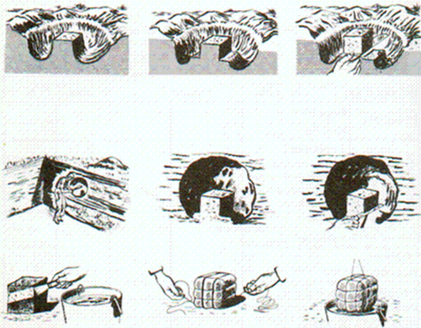
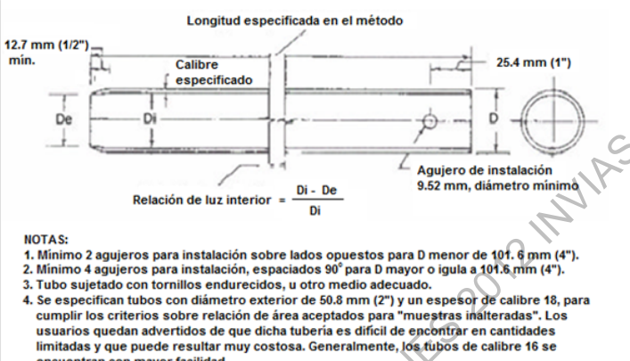
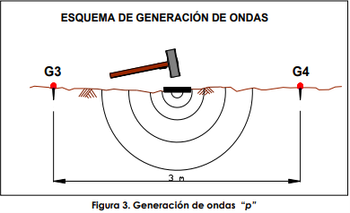

El muestreo es un proceso estadístico el cual se basa en escoger y tomar una parte representativa de la población, a la cual se le podrá estudiar y determinar propiedades, características, tendencia, entre otras; a esta parte tomada se le llama muestra. Esto se realiza con la finalidad de extrapolar la información de la muestra en la población y así poder llegar a conclusiones y tomar decisiones sobre la población.
En el caso de la mecánica de suelos y la geotecnia, el muestreo se basa en seleccionar uno o más lugares del terreno que se quiere estudiar y tomar muestras del suelo en este lugar. Luego llevar estas muestras al laboratorio para realizarle diversos ensayos y poder encontrar las propiedades de este suelo (o si se cuenta con las herramientas necesarias y el ensayo lo permite, se podrían realizar in-situ (En el sitio donde se sacó o se tiene la muestra.)). Una vez se tengan estas propiedades se podrá tomar decisiones sobre el terreno estudiado tales como posibles usos, intervenciones necesarias, manejo del suelo y muchas más. Dependiendo de las propiedades que se le quieran tomar al sitio de análisis, se determinaran las pruebas y ensayos que se le deben realizar al suelo y por ende el tipo y forma de muestreo que se utilizará.
Una muestra alterada es aquella que no conserva la geometría de donde proviene, por lo tanto, tiende a estar disgregada lo que afecta otras propiedades como la humedad, relación de vacíos, densidades, Porosidad, y demás. Estas muestras no necesitan ser protegidas de los factores externos, por lo que son mucho más fácil de transportar, tomar y manipular, lo que disminuiría sus costos. Este tipo de muestra puede ser utilizado en los laboratorios para formar especímenes con diferentes propiedades y características y poder encontrar las propiedades optimas de este suelo. Teniendo en cuenta lo mencionado anteriormente la extracción de la muestra no necesita herramientas o procedimientos especifico, pero solo asegurarse que el suelo no esté contaminado por material no deseado, guardarlo y nombrarlo correctamente.

Existe muchas formas de tomar muestras alteradas, todas, arrojando resultados y fiabilidades muy diferentes. El método de Muestra Compuesta consta de tomar muestras alteradas de diferentes lugares del terreno y juntarlos en una misma muestra, a esta nueva muestra combinada se le realizarán los ensayos de laboratorios pertinentes. El problema que existe con este método es que se pierde la variedad y heterogeneidad que podría existir en el terreno, Otra opción sería transportar las muestras individuales, pero esto aumentaría el costo de transporte.

Otro método que aumenta la precisión es dividir el terreno en subunidades y dentro de estos tomar muestras en lugares aleatorios. Estas subdivisiones se pueden encontrar ya sea por propiedades geométricas (Área), por paisaje (sitios que se puedan identificar que tienen propiedades diferentes según su paisaje) y/o por Topografía.

Las muestras inalteradas son aquellas que no son modificadas en ningún aspecto durante el proceso de extracción y transporte, y solo se saca de su contenedor cuando se le van a realizar los ensayos y prácticas. Al contrario de las muestras alteradas, estas nos logran dar mucha más información, como: las relaciones de fase, índices de Liquides y plasticidad, entre otros. Los problemas que pueden presentar este tipo de muestras son: su extracción, ya que se necesitan cierto conocimiento y herramientas para obtenerla, su transporte y su conservación, ya que se deben mantener aislados y confinado para que no pierda su contenido de agua, forma y masa.
Las muestras tomadas en bloque son un tipo de muestras inalteradas las cuales requieren que se haga un corte del terreno y después se talle un bloque de 30*30cm luego se extrae este bloque, justo después se procede a sellarlo con mínimo tres capas de parafina o un plástico que le permita mantener su forma y su humedad.

Otro método para obtener muestras inalteradas es mediante un cilindro ya sea metálico como el tubo Shelby o de PVC. Este cilindro se penetra dentro de suelo al cual se le quiere tomar la muestra y una vez la muestra esté dentro del tubo se extrae con la muestra adentro y se utiliza plástico para sellar los dos extremos del cilindro y conservar su humedad. Luego en el laboratorio con las maquinas necesarias se extrae la muestra con forma cilíndrica y se procede a realizar los ensayos.
Para la obtención de muestras con tubos de pare delgada se tiene la norma INV E 105-13, en la sección 100 de ensayos de suelos, esta norma indica el procedimiento, material y equipo necesarios recomendando distintas alternativas para la obtención de las muestras inalteradas, el procedimiento adecuado es iportante para conservar las muestras relativamente intactas, este procedimiento inicia con avanzar en la perforación hasta la profundidad de muestreo, donde si el suelo es demasiado duro para el muestreado rde empuje está permitido introducir el tubo mediante golpes, para luego ser retirado tan cuidadosamente cómo sea posible una vez alcanzado el fondo del tubo, cuando se extrae el tubo del suelo se retiran los residuos de la arte de encima y de la parte de abajo, y se sella los extremos para conservar la húmedad en el transporte del suelo.
Los procedimientos indirectos son aquellos que nos permiten identificar propiedades del suelo sin extraerlo o realizarle ensayos para estas propiedades. Este procedimiento se basa en estudiar las propiedades de algo en el suelo, lo que nos permite encontrar las propiedades de dicho suelo. Un ejemplo de estos ensayos son los estudios de la transmisión de ondas, en los cuales se ve el comportamiento de las ondas Rayleigh, S y/o P. Con este método podemos encontrar las profundidades de los suelos, su módulo de elasticidad, su relación de Poisson, módulo de rigidez y otras características únicas del suelo.
Después de saber dónde se iba a tomar la muestra, lo primero que se llevó a cabo fue descapotar el sitio, para quitar la materia orgánica, además se tuvo que seguir excavando alrededor de 50 centímetros más, ya que mientras se excavaba se encontraban raíces, hojas y animales que podrían comprometer la muestra tomada.
Una vez garantizada un suelo sin materia orgánica se introduce el tubo shelby en el suelo lo más que se pudo y se procede a extraerlo con la muestra en él.
Ya sacada la muestra se procede a su conservación, por lo que se sella por el lado en el que está la muestra con vinipel y por el otro se introdujeron bolsas de plástico, Esto con el fin de que la muestra conserve su forma y humedad mientras se llevaba al laboratorio a realizar los ensayos necesarios para identificar y caracterizar el suelo.
| Medidas del cilindro | ||
|---|---|---|
| H1 | 16.9 | cm |
| H2 | 16.8 | cm |
| H3 | 16.8 | cm |
| H prom | 16.8 | cm |
| P1 | 23.6 | cm |
| P2 | 23.1 | cm |
| P3 | 23.4 | cm |
| P prom | 23.4 | cm |
| Radio | 3.72 | cm |
| Area | 43.45 | cm^2 |
| Volumen | 731.40 | cm^3 |
Una vez en el laboratorio se sacó la muestra usando los instrumentos necesarios, durante este proceso se pudo ver cómo la muestra estaba muy húmeda ya que al extraerla le chorreaba un poco de agua por los costados. También durante este proceso la muestra se fracturó, lo que hizo, fue que se tuviera que dividir la muestra en dos y luego quitarle las partes que contenían materia orgánica. Finalmente se logró extraer un cilindro de 16.833cm de altura promedio, 23.667cm de perímetro promedio y una masa húmeda inicial de 1272.55 gramos. La otra parte del cilindro que se fracturó en el proceso de extracción y el material disgregado se guardó en caso de que se necesitara para realizar otros ensayos.